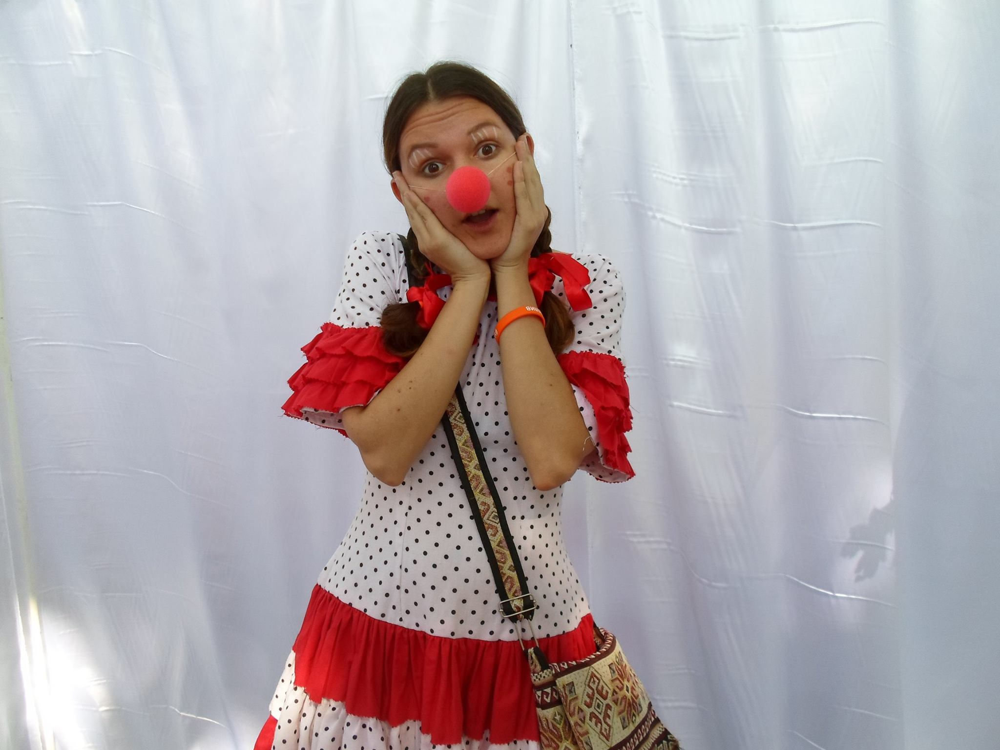

Hanna Komar
Quality Assurance Engineer

Kremenchuk, Ukraine
Cell phone: +380000000000
Skype: anna___
E-mail: anna.join.kr@gmail.com
Play the game
WORK EXPERIENCE
QA Engineer, “ProArea”, August 2020 - present
- Web testing and mobile app testing (iOS and Android)
- Writing and maintaining test documentation (checklists, test cases, bug reports, test planes, specification etc.)
- Managing tasks and defects using Jira
- Mentoring junior QA Engineers
QA Engineer, “Fundacja Aktywizacja”, February 2020
- Testing https://aktywizacja.org.pl, http://aktywujprace.pl, focusing on the web accessibility of these pages for users (including web accessibility audit, writing tasks for software improvements, executive manual functional, UI)
EDUCATION
- 2008 - 2014- Master in Tourism and Hotel Management and Organisation, Kharkiv Beketov National University
- 2012 - 2013 - Master Accounting & Audit, National Aviation University
- 2008 - 2012 - Bachelor Accounting & Audit, Kremenchuk Flight College
LANGUAGE SKILLS
- Ukrainian - Native or Bilingual Proficiency
- Russian - Native or Bilingual Proficiency
- English – Full Professional Proficiency
- Polish – Professional Working Proficiency